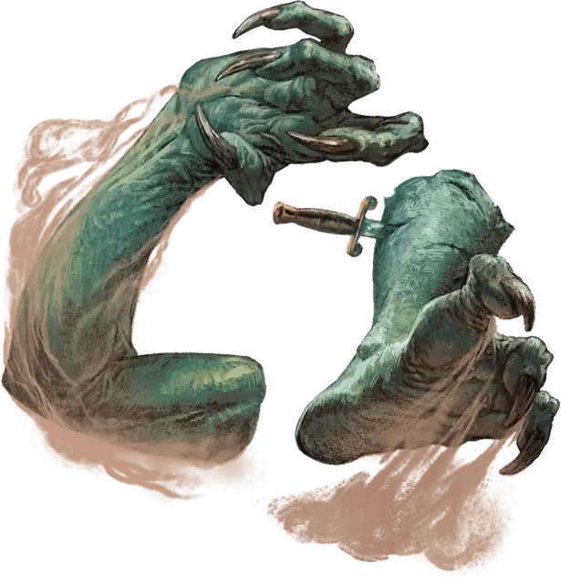

Конечность тролля
Troll Limb
Маленький Великан, Хаотичный Злой

Класс Защиты 13 Инициатива +1 (11)
Хиты 14 (4к6)
Скорость 20 футов
| мод | спас | ||
|---|---|---|---|
| СИЛ | 18 | +4 | +4 |
| ЛОВ | 12 | +1 | +1 |
| ТЕЛ | 10 | +0 | +0 |
| мод | спас | ||
|---|---|---|---|
| ИНТ | 1 | −5 | −5 |
| МДР | 9 | −1 | −1 |
| ХАР | 1 | −5 | −5 |
Чувства Тёмное зрение 60 футов, пассивное Восприятие 9
Языки нет
Опасность 1/2 (100 опыта; БВ +2)
Особенности
Регенерация. Конечность восстанавливает 5 Хитов в начале каждого своего хода. Когда конечность получает урон Кислотой или Огнём, в следующий ход конечности эта особенность не срабатывает. Конечность умирает только если начинает свой ход с 0 Хитов и не может регенерировать.
Порождение тролля. Конечность сверхъестественным образом обладает теми же чувствами, что и целый тролль. Если через 24 часа конечность не уничтожена, бросьте 1к12. Если выпало «12», конечность вырастает в Тролля; иначе конечность иссыхает.
Действия
Раздирание. Бросок рукопашной атаки: +6, досягаемость 5 фт. Попадание: 9 (2к4 + 4) Рубящего урона.
Бонус мастерства +2
Среда обитания Арктика, Леса, Холмы, Горы, Болота, Подземье
Сокровища Отсутствуют
Тролли
Омерзительные регенерирующие хищники
Тролли выползают на свет, дабы охотиться на тех, кто меньше и слабее, и утаскивать пленников в гнилые недра своих логовищ. Эти уродливые громилы способны затягивать раны и отращивать отсечённые части тела — даже собственные головы. Отрубленные конечности тролля продолжают шевелиться и нападать. Если не прижечь их пламенем или кислотой, тролли оправляются даже от самых чудовищных увечий и стремятся отомстить тем, кто осмелился их повергнуть.
Как правило, тролли охотятся в одиночку, но порой сбиваются в маленькие стаи, дабы устраивать засады на добычу или разорять селения. Другие создания — вроде карг или холмовых великанов — могут склонить троллей служить себе, посулив им мерзкие трапезы.